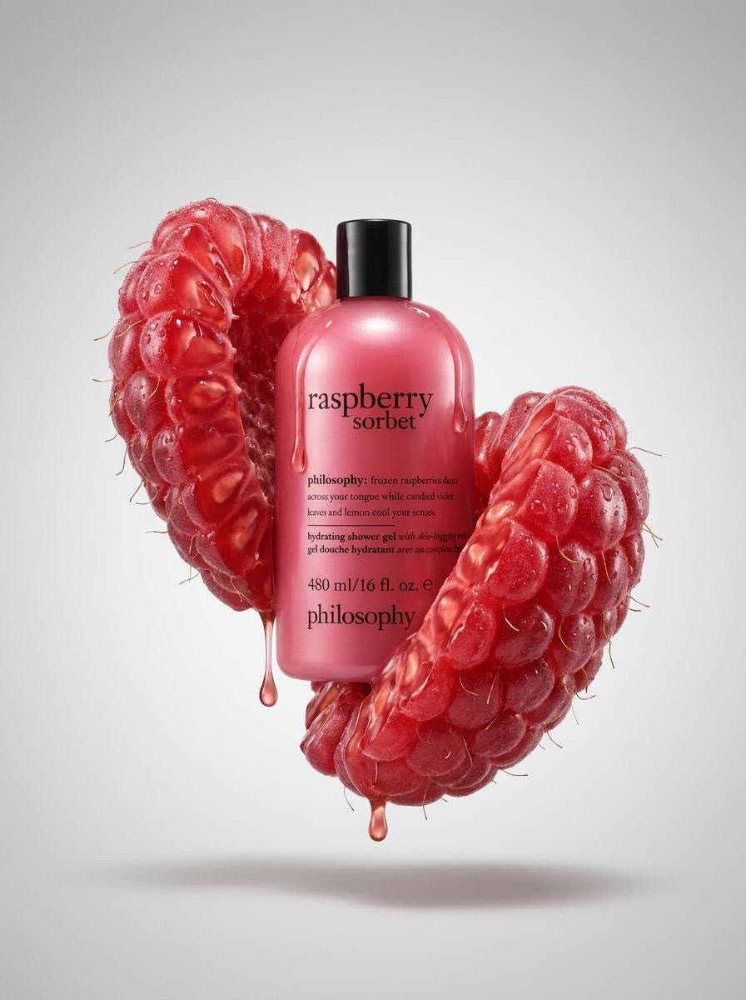

Raspberry Shell Product Photography
PRP-001Prop stylingNano Banana Proby MaddoxAugust 15,

A commercial product photography prompt featuring a product held within a hyper-realistic, juice-dripping raspberry cross-section.
Prompt
Studio product photo of {argument name="product" default="product from uploaded photo"} encased inside a hyper-realistic, oversized cross-section of a raspberry, split into two halves that wrap around and cradle the product like a protective shell, with the product sitting centered, floating slightly with a soft contact shadow; the raspberry surface shows glossy, dew-covered individual drupelets with visible juice dripping down realistically over the product, fine details like tiny hairs and moisture droplets, hyper-realistic CGI product photography style, high-end commercial advertising look, soft diffused studio lighting with subtle rim light, seamless light grey studio backdrop with subtle gradient, vertical composition, clean and minimal, no text overlays unless part of the product's own packaging.Tags: product, 9:16 vertical